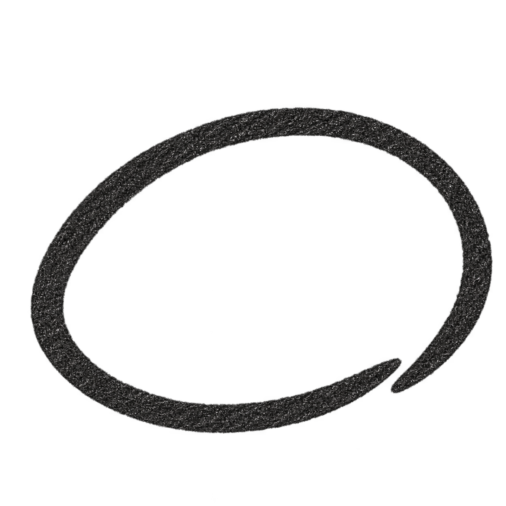

Noto: Tiny Notes
Made for thinking. Open a page and work through a problem by hand. When you get stuck, circle the step you want to share.
Start with a sheet of paper
Use Apple Pencil on iPad or write with your finger on iPhone. Choose blank paper for a rough sketch, lines for a list, or a grid for a graph.
Share just the part you’re working on
On iPad, draw a circle with your finger around a calculation, diagram, or question. You can share the selection as an image or drag it into a compatible AI app beside Noto. Your original work stays on the page, ready for the next line.
Work through a problem by hand
- The Calculus Relay lets you solve a problem one line at a time with a classmate.
- AP Calculus AB practice gives you a derivative sign problem with a hint and a worked solution.
- A calculus tutor prompt asks your AI assistant for one hint at a time.
- A printable calculus mistake log helps you find where a solution went wrong and retry it.
- AP Physics 1 free-body diagram practice lets you check the arrows on a sketch of a block sliding down a ramp.
- Linear independence practice lets you test what changes in a proof when you swap one coordinate.
打开，就是一张纸。
写下一句还没成型的想法，画个草图，或者算一道题。圈选需要的那一小块，就能以图片分享，接着回到原来的纸上继续写。
查看中文使用帮助